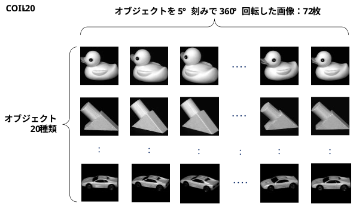

米コロンビア大学のCAVEラボ（Columbia Automated Vision Environment）が公開している、物体認識や3次元姿勢推定のアルゴリズム評価用の画像データセット。
\[ \begin{array}{l | l | l | l | l | l | l} \textbf{データセット} & \textbf{物体数} & \textbf{画像} & \textbf{枚数} & \textbf{角度} & \textbf{画像サイズ}\\ \hline \textbf{COIL-20} & \text{20種類} & \text{グレースケール} & \text{1,440枚} & \text{5°刻み} & \text{128×128}\\ \hline \textbf{COIL-100} & \text{100種類} & \text{フルカラー} & \text{7,200枚} & \text{5°刻み} & \text{128×128} \end{array} \]

https://cave.cs.columbia.edu/repository/COIL-20
・unprocessed：背景未処理
・processed： 背景削除済
ダウンロードして、zipファイルを解凍すると、png画像群が得られる。